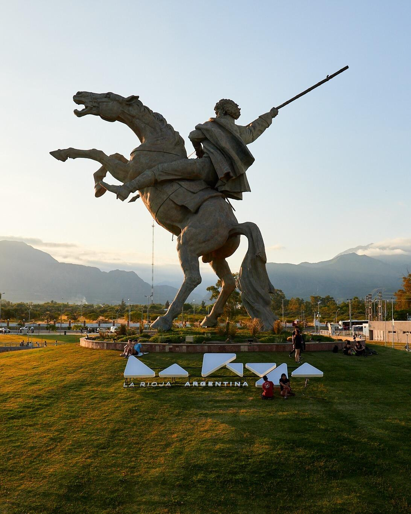

Museo · Salas interactivas
Paseo Cultural Castro Barros
Un edificio neoclásico que propone un recorrido desde la prehistoria hasta el arte moderno a través de salas interactivas. Uno de sus atractivos es el viaje virtual a Talampaya.

RealityTour · Guía de la provincia
Historia que se toca, aventura que se respira y paisajes de sierra en el corazón del Noroeste argentino.
Empezá a explorarEn el Noroeste argentino, La Rioja combina tradiciones que se viven de cerca, paisajes que sorprenden y una hospitalidad que hace sentir en casa desde el primer saludo. Su capital se recorre como un museo a cielo abierto, mientras sus áreas naturales proponen senderos, cascadas y espejos de agua.
Un viaje en el tiempo por los espacios más emblemáticos de la capital.
Museo · Salas interactivas
Un edificio neoclásico que propone un recorrido desde la prehistoria hasta el arte moderno a través de salas interactivas. Uno de sus atractivos es el viaje virtual a Talampaya.
Historia · Federalismo
Narra la vida del «Tigre de los Llanos» con recursos tecnológicos que sorprenden. Una visita ideal para quienes se interesan por los caudillos y la historia del federalismo.
Arquitectura colonial
1623 Año de origen del templo
Según el portal oficial de Turismo, es el templo más antiguo de la Argentina. Sus muros de piedra lo convierten en una parada obligada para fotografiar arquitectura colonial.
Propuestas al aire libre para caminar, explorar y salir al agua.
Trekking · Senderos y cascadas
Dos maneras de vivirla, según la experiencia y el ritmo de cada viajero.
El trekking hasta la cascada es la propuesta más destacada del área: una caminata que el portal oficial describe como una experiencia mística.
Una alternativa de menor exigencia, ideal para ir con chicos, con algunas de las mejores vistas del lugar.
Arqueología · Senderos
Reúne ruinas jesuíticas y senderos que acercan al visitante al pasado arqueológico de la región.
Flora nativa · Avistaje de aves
Un refugio lejos del ruido urbano para caminar entre flora autóctona y observar aves.
Kayak · Cicloturismo
El lugar elegido para remar en kayak o pedalear mientras cae el sol.
Para los días de calor: el Parque Acuático es una opción de diversión para toda la familia.
Puntos de encuentro donde lo clásico y lo moderno conviven.
Espacio verde · Mirador
El gran pulmón verde de la ciudad. Allí se levanta el Superdomo y un mirador permite ver cómo el sol se oculta detrás de las sierras.
Aguas danzantes · Memorial
Con sus aguas danzantes y el Memorial a los caudillos, es el sitio ideal para compartir un mate al caer la tarde.
Sabores y oficios para llevarse un recuerdo auténtico.
Tejidos · Cerámica
Funciona en una casona del siglo XIX. Es el lugar para encontrar tejidos y cerámicas elaborados por manos riojanas.
Sabores regionales
Los food trucks de los parques y los cafés literarios son una buena excusa para probar alguna especialidad regional.
Ampliá esta información en el artículo original del portal de Turismo de La Rioja.
Leer «La Rioja, Argentina: Un Tesoro de Historia, Aventura y Naturaleza» (se abre en una pestaña nueva)Av. Ortiz de Ocampo esq. Av. Félix de la Colina, La Rioja
Información turística elaborada a partir de contenidos del portal oficial de Turismo de La Rioja, Argentina. RealityTour es un proyecto universitario independiente y no es un sitio oficial del Gobierno de la Provincia de La Rioja.
← Volver a RealityTour